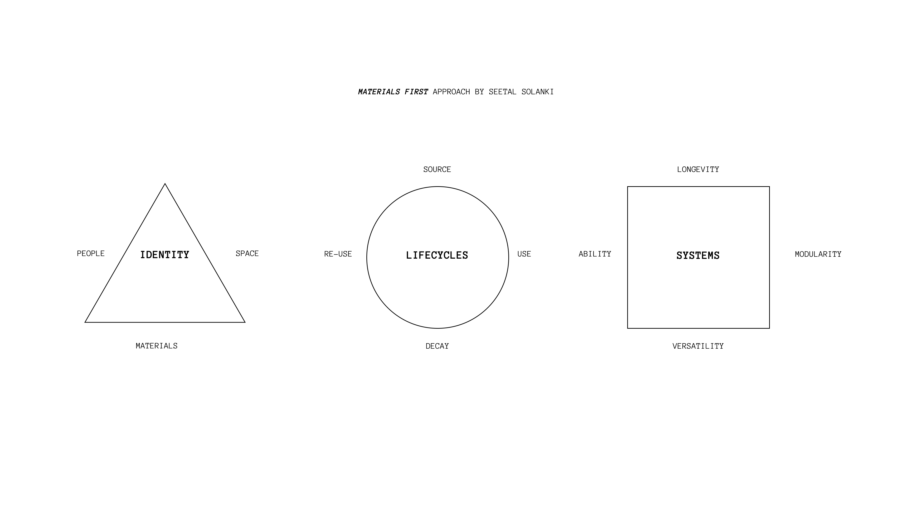

Skinside Out is a toolkit to empower us to take control of our own skincare by growing sustainable sheet masks suitable for all skin types - not just human ones. How can we care for both our skin and our planet’s skin at the same time?

PART 1: MATERIALS BASED PROCESS
My process combined Seetal Solanki’s materials first approach that assesses a materials identity, lifecycle, and system, with the traditional double diamond to explore bacterial cellulose or SCOBY’s natural properties to utilise it to its full potential.
I conducted a total of 3 week long experiments: altering its visuals with fruit and vegetable peels, enhancing its durability with a net and purple cabbage, and testing the addition of other household food items.
My first experiment tested different fruit and vegetable peels that were grown for a week. Although SCOBY formed in all of them, the sugar content of the onion skin was not high enough to form a thick enough layer to dry, and the egg shells were too hard causing the material to break when drying.


(After 1 week)

(After drying)
My second experiment tested if we could enhance the durability of SCOBY by growing it with a net and large pieces of purple cabbage, specifically to see if it would grow to encompass the other objects as it formed its layer or if it would push it away. Each SCOBY encompassed the additional objects, but the cabbage was too thick. However, I found that different patterns can be grown onto SCOBY as the natural cabbage dyes bled into the SCOBY section they were attached to.


(Start of growth)


(After 1 week)


(After harvesting)
My last experiment tested the addition of red wine, nettle, oat milk, and kefir. The sugar content in nettle was not high enough for a SCOBY to form, and pre-fermented additives, like red wine and kefir increased the speed of growth and made its texture more glossy. Two rounds of SCOBY were harvested.


(After harvesting)

(After drying)
PART 2: SKINSIDE OUT TOOLKIT
Sheet masks, as opposed to bandages and edible food packaging, maximized the use of SCOBY’s natural properties. In order to encourage changes in people’s behaviour, I tied in ancient fallowing soil techniques, especially considering the time and effort it takes to grow each face mask.


(Product lifecycle)
In this project, I conducted material experimentation with SCOBY, also known as symbiotic culture of bacteria and yeast or bacterial cellulose. The goal of Skinside Out is to inspire people to understand where their products come from and the labour it takes to create them, to draw similarities between ourselves and the environment to foster a better relationship, and to better enhance a material-human connection with seemingly meaningless objects.
→ Winter 2023 (4 Weeks)
→ Solo Vision
→ Instructors: Leila Sheldrick, Gareth Loudon, John Stevens, Celine Mougenot, Paula Zucotti, Jack Mama, and Nick Munro